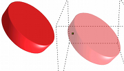
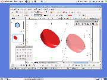
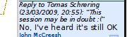
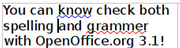
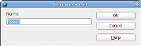
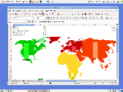
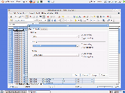
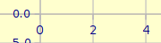
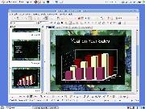

Table des matières
|
Améliorations
générales
|
Amélioration
du rendu d'écran
|
 |
 |
OpenOffice.org
utilise maintenant une technique appelée « anticrénelage »
(anti-aliasing) pour améliorer le rendu à
l'écran (lignes, cercles, etc). Vous devriez noter une amélioration
immédiate de la clarté des graphiques -- particulièrement dans
les diagrammes où qu'ils apparaissent dans OpenOffice.org.
Ceci
a également amélioré la « géométrie graphique », par exemple quand
vous superposez une forme sur une autre pour créer une forme combinée.
Voyez
cet article (en anglais) sur
le blog GullFOSS pour plus de détails.
|
|
Effectuer
des « glisser-déplacer » plus facilement avec les graphiques
|
|  |
 |
Quand
vous glissez un objet dans un dessin à travers l'écran, OpenOffice.org
ne montre maintenant que « l'ombre » de celui-ci, au lieu d'une simple ligne pointillée. Ceci facilite
considérablement le placement précis d'images dans des dessins
complexes.
|
|
Verrouillage
des fichiers amélioré
|
 |
 |
Si vous travaillez sur un réseau où
plusieurs personnes peuvent avoir accès au même document, le
verrouillage de fichiers évite l'écrasement accidentel des
changements effectués par d'autres personnes. Comme
OpenOffice.org fonctionne sous différents systèmes
d'exploitation, il ne peut se reposer exclusivement
sur ceux-ci pour prévenir les utilisateurs
quand un document est ouvert. OpenOffice.org a maintenant son propre
mécanisme, ce qui lui permet d'avoir un verrouillage stable quand celui
du système d'exploitation a échoué. Il permet également à
OpenOffice.org de montrer qui a déjà ouvert le document.
|
|
Surlignage
|
 |
 |
OpenOffice.org autorise
maintenant le surlignage, en plus du soulignage classique,
avec la même gamme d'options que le soulignage (type de lignes,
couleurs).
|
|
Writer
Surbrillance
atténuée
|
 |
 |
Le
texte sélectionné est maintenant affiché avec une couleur d'arrière
plan attenuée, plutôt qu'en vidéo inverse. Plus agréable à
l'oeil, et plus facile à utiliser.
|
|
Amélioration
des notes
|
|  |
 |
Il
est maintenant possible pour un groupe de rédacteurs
de conduire une conversation structurée par le
biais des
notes, en faisant un clic-droit sur une
note et en
choisissant « répondre »
Par ailleurs, la fonction recherche tient désormais compte du
texte des
notes.
|
|
Intégration plus
approfondie du
vérificateur grammatical
|
|  |
 |
Avec OpenOffice.org 3.1, le cadre d'application pour
vérificateur grammatical a été étendu pour permettre l'accès à des
extensions comme LanguageTool depuis le menu Outils >
Orthographe et Grammaire. Notez que OpenOffice.org
possède un
cadre d'application pour vérificateur grammatical, mais ne
propose pas lui-même de vérificateur intégré. Un
vérificateur peut désormais être installé en tant
qu'extension.
|
|
Niveaux
de plans dans les paragraphes
|
 |
 |
Les
rédacteurs de documents aux formats d'ordonnancement complexes
peuvent maintenant
définir un nouveau paragraphe ainsi que l'attribut «
Niveau de plan ». Ceci transforme un paragraphe normal en
titre, indépendemment d'un style de liste ou de paragraphe.
|
|
Calc
Renommer
les feuilles avec un double-clic
|
|  |
 |
Double-cliquer
dans l'onglet d'une feuille Calc affiche maintenant
la boite de dialogue Renommer. Dans les versions précédentes, il
fallait un clic-droit sur l'onglet et choisir l'option Renommer du
menu contextuel. Ce changement facilite l'accès à
cette fonction fréquemment utilisée.
|
|
Ascenseur
de zoom dans la barre d'état
|
 |
 |
Le nouvel ascenseur de zoom dans la barre d'état de
Writer a été très
apprécié dans OpenOffice.org 3.0. Avec OpenOffice.org 3.1, il
est également disponible dans Calc, permettant un contrôle
rapide et précis du niveau de zoom pour l'affichage à l'écran.
|
|
Aide
mémoire formules
|
 |
 |
Calc affiche
maintenant la syntaxe de la formule que vous
saisissez, pendant toute la saisie, juste à droite de la
cellule modifiée pour vous servir d'aide-mémoire pratique sur
l'utilisation de la formule.
|
|
Tri amélioré
|
 |
 |
Il y a eu nombre de changements pour rendre le tri plus
logique, cohérent et puissant. La première fois que vous
utilisez la fonction
(également disponible à partir de la barre d'outils), Calc va supposer
que vous voulez trier sur la colonne où est le curseur. Les boutons de
la barre d'outils utilisent maintenant la même logique que la boîte de
dialogue Tri
pour déterminer si une plage a des en-têtes de colonnes.
Enfin, quand vous triez, Calc se souvient maintenant de l'ordre
original des entrées avec des clés de tri équivalentes.
|
|
Changements
dans les formules
|
Une
nouvelle fonction de feuille de calcul EUROCONVERT pour les
conversions entre les anciennes monnaies de la zone
européenne, avec l'import de et l'export (binaire) vers les
formats de fichier MS-Excel.
Nouvelles fonctions de feuilles de calcul GAMMA, KHIDEUX, et
KHIDEUX.INVERSE, et modifications des fonctions LOI.GAMMA,
LOI.KHIDEUX,
et LOI.CHIDEUX.INVERSE pour les analyses statistiques.
La fonction LOI.BETA possède maintenant un
paramètre optionnel permettant de choisir de calculer ou bien
la densité de probabilité (valeur FAUX) ou bien la fonction de
répartition (valeur VRAI). Ce paramètre est défini par défaut à VRAI
pour des raisons de compatibilité. |
|
Améliorations des
performances
|
| Des
goulots d'étranglements de la performance dans Calc ont été
supprimés avec pour résultats des améliorations surprenantes dans
deux cas de tests : de 24 secondes à 1,2 secondes dans le
premier cas ;
et de une heure à approximativement 12 minutes dans le
second cas. Ceci fait partie des efforts
continus pour améliorer les performances
de Calc.
|
|
Diagrammes
Positionnement
flexible des axes
|
|  |
 |
Les diagrammes d'OpenOffice.org offrent maintenant une plage
d'options pour le positionnement des axes. Cette
fonctionnalité était très demandée, notamment dans le domaine
de l'enseignement.
|
|
Prise en
compte des données manquantes
|
 |
 |
Vous pouvez maintenant également choisir la façon dont
OpenOffice.org traite les points de données manquantes --
Laisser un espace, remplacer par zéro ou interpoler la valeur
manquante.
Pour
de plus amples informations sur les changements dans
les diagrammes, veuillez vous référer à cet article
sur le blog GullFOSS, en anglais.
|
|
Impress
Boutons de
taille de police
|
 |
 |
La
barre d'outils d'Impress dispose maintenant de
boutons pratiques pour augmenter ou
diminuer rapidement et facilement la taille de la police du
texte. Ajustez parfaitement votre texte en quelques secondes !
|
|
Base
Coloration
syntaxique SQL
|
 |
 |
Quand
vous écrivez du SQL, Base utilise maintenant une coloration
syntaxique spécifique. Il va également « flasher » pour
indiquer des parenthèses correspondantes. Vous pourrez plus
facilement identifier les fautes de frappe, les erreurs dans
votre syntaxe SQL, etc.
Vous pouvez créer votre propre système de coloration à l'aide du menu
Outils
-> Options -> OpenOffice.org -> Apparence
-> Mise en évidence de la syntaxe SQL, et
choisir votre propre police
depuis le menu Outils
-> Options -> OpenOffice.org -> Polices.
|
|
Des
applications macros dans Base
|
Avec OpenOffice.org 3.1, il est
possible de construire une « application de base de données »
complète à l'aide de macros et de scripts à l'intérieur d'un document Base (.odb). Cette fonctionnalité existait déjà dans d'autres types de documents.
Cela signifie que les macros peuvent maintenant être exécutées
soit à partir du document lui-même, ou d'un de ses sous-composants : formulaire,
rapport, création de table, création de requêtes, création de
relation, vue de table. C'est une amélioration importante pour les
personnes
souhaitant créer des « applications intégrées » complètes dans Base.
Note : Les développeurs créant des applications pour Base sont
invités à lire l'article wiki (voir ci-dessous) pour des informations
importantes sur d'autres fonctions développeurs, et sur les questions de rétro-compatibilité.
Pour de plus amples détails sur tous les changements dans Base, veuillez lire le wiki (anglais).
|
|
Internationalisation
et localisationsAméliorations pour les écritures bi-directionnelles
|
 |
Les scripts complexes et scripts
bi-directionnels ont été
considérablement améliorés, en particulier en ce qui concerne
la justification
et la vocalisation des textes.
Les formulaires de contrôle ainsi que
les diagrammes acceptent maintenant les scripts complexes.
|
|
Nouveaux environnements linguistiques
|
OpenOffice.org 3.1 ajoute des données pour les environnements
linguistiques suivants : Maltais (Malte)
[mt-MT], Birman (Birmanie-Union du Miyanmar) [my-MM], Shuswap
(Canada)
[shs-CA], et Tok Pisin (Papouasie-Nouvelle-Guinée)
[tpi-PG]. L'environnement linguistique peut être sélectionné
pour l'attribution
des caractères et la
vérification orthographique, pour l'environnement
linguistique par défaut, comme langue par défaut pour les
documents ainsi que pour les formats de nombre et la
numérotation des plans.
Il ajoute aussi de nouveaux environnements linguistiques arabes à la
liste des langues, sélectionnables pour l'attribution de
caractères et la vérification orthographique : Arabe
(Tchad) [ar-TD] ; Arabe (Comores) [ar-KM] ;
Arabe (Djibouti) [ar-DJ] ; Arabe
(Érythrée) [ar-ER] ; Arabe (Israël) [ar-IL]
; Arabe (Mauritanie) [ar-MR] ; Arabe (Palestine)
[ar-PS] ; Arabe (Somalie)
[ar-SO] ; Arabe (Soudan) [ar-SD]. La table de
langue et la liste déroulante ont également maintenant une entrée «
arabe » (sans région / pays) qui ne correspond pas à un
environnement linguistique. Il ne fournit pas d'attribution de langage,
etc., mais est sélectionnable si un package de langue arabe
est installé, au lieu du précédent « Arabe (Égypte) ».
|
|
|
Page
originale en anglais : http://www.openoffice.org/dev_docs/features/3.1/index.html
Traduction
: Dominique Pautrel et Jean-Christophe Helary
Retour
à la page d'informations
|
|
OpenOffice.org native tongue concept
and
francophone
project are built for you with pride by Guy Capra (Alomphega).
This fr project is also led and maintained with pride too by
Jean-Baptiste Faure.
|


{kind=link}
{kind=link}
{kind=link}
{kind=link}